|
Vidya Narayanan
I recently received my PhD in computer science from
Carnegie Mellon University, advised by Jim McCann.
I am associated with the Textiles lab at CMU.
I am broadly interested in fabrication, graphics and visualization.
In summer 2018, I interned at Adobe Research with Michal Lukac, Amanda Ghassaei and Danny Kaufman.
Before joining CMU, I was a research associate at Disney Research, Pittsburgh
advised by Jim McCann.
I received my masters degree at the Indian Institute of Science,
focusing on graphics and scientific visualization and was advised by
Vijay Natarajan.
Email |
CV |
Google Scholar
|
|
|
Research
I am interested in computational tools for fabrication, computer graphics, and visualization.
I believe existing fabrication machinery such as knitting machines and weaving looms have
been largely overlooked as technology that can be used for custom and rapid fabrication
much like 3D printers.
My current research looks at automatic and semi-automatic tools for fabricating textiles,
particularly with computational machine knitting.
|
| 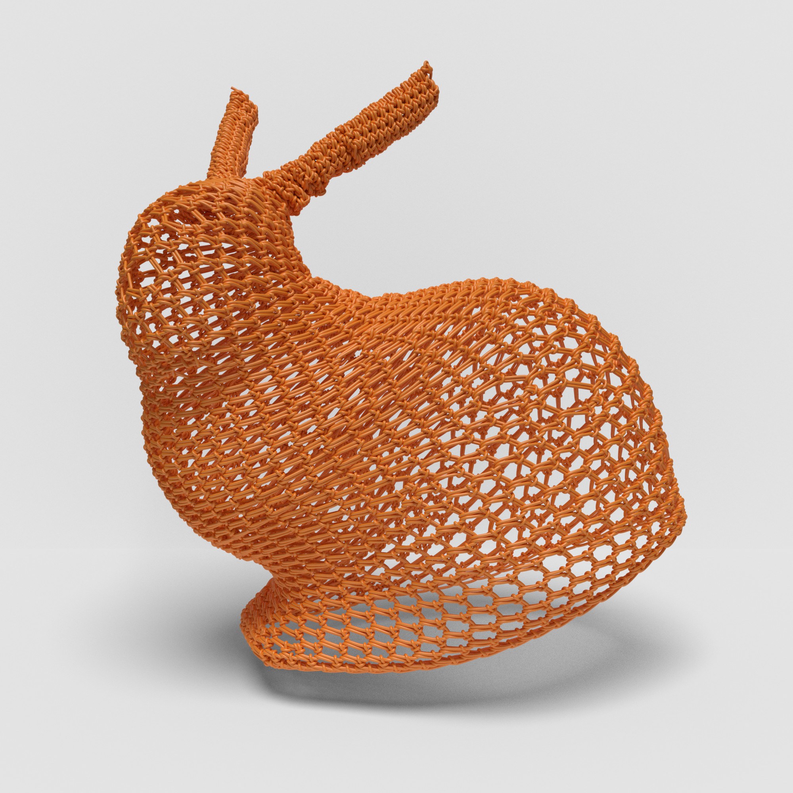
|
Representing Crochet with Stitch Meshes
Michelle Guo, Jenny Lin, Vidya Narayanan, and James McCann
SCF, 2020 and SIGGRAPH (Posters), 2020
paper |
project page
Crochet is a fabrication technique in which a 3D surface is created from yarn by interlacing loops formed with a special hook. Crochet patterns are typically represented using a standardized set of abstract pictorial symbols. Unfortunately, while this notation is enough for someone well-versed in the individual stitches, it does not directly show the yarn layout of stitches. This lack of specification makes it difficult for both novice users and computational
design systems to parse, visualize, and design crochet patterns. We demonstrate how to represent crochet patterns within the stitch mesh paradigm. That is, the pattern is represented using a library of tiles, where each tile contains yarn geometry, and tiles connect along their edges. In order to adapt stitch meshes to crochet, we introduce a special edge type which captures the idea of the current loop -- the loop of yarn held on the crochet hook during fabrication. We also create a library of mesh face types which model commonly-used crochet stitches. We illustrate the richness of the crochet stitch faces by showing a number of examples including patterns generated from 3D models.
|
| 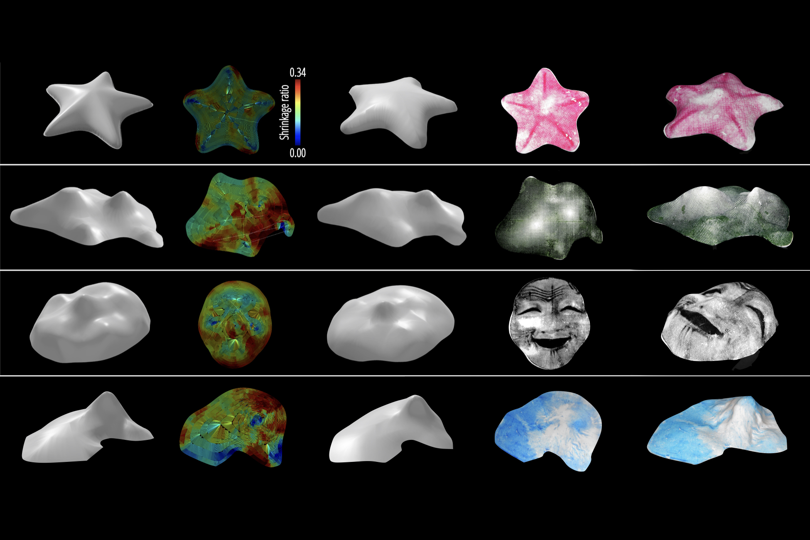
|
Geodesy+: Inverse Design Tool for Asymmetrical Self-Rising Surfaces
Jianzhe Gu, Vidya Narayanan , Guanyun Wang, Danli Luo, Harshika Jain, Kexin Lu, Fang Qin, Sijia Wang, James McCann, Lining Yao
SCF, 2020
paper |
project page
4D printing encodes self-actuating deformation during the printing process, such that objects can be fabricated flat and then trans- formed into target 3D shapes. While many flattening algorithms have been introduced for 4D printing, a general method customized for FDM (Fused-Deposition Modeling) printing method is lacking. In this work, we vary both the printing direction and local layer thickness; and extend the shape space to continuous-height-field surfaces without the requirement of symmetry. We introduce an end-to-end tool that enables an initially flat sheet to self-transform into the input height field. The tool first flattens the height field into a 2D layout with stress information using a geometry-based optimization algorithm, then computes printing tool paths with a path planning algorithm. Although FDM printing is the fabrication method in this work, our approach can be applied to most extrusion-based printing methods in theory. The results exemplify how the tool broadens the capabilities of 4D printing with an expanded shape space, a low-cost but precise coloring technique, and an intuitive design process.
|
| 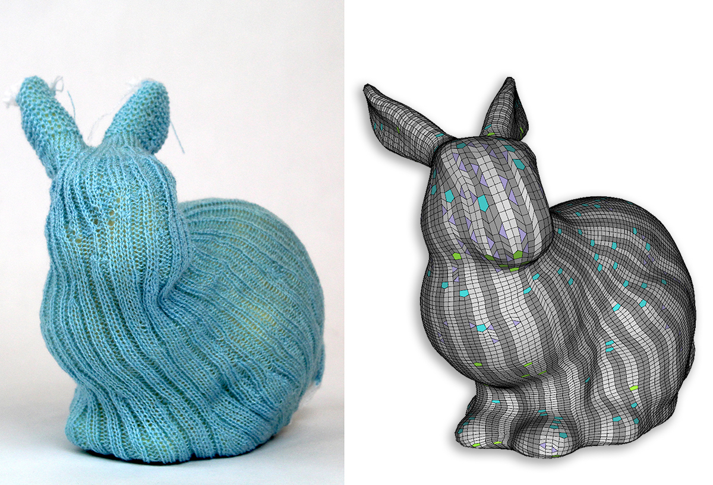
|
Visual Knitting Machine Programming
Vidya Narayanan , Kui Wu (co-first author), Cem Yuksel and James McCann
SIGGRAPH, 2019
paper |
project page
In this paper, we present the first general visual programming interface for creating 3D objects with complex surface finishes on industrial knitting machines.
At the core of our interface is a new, augmented stitch mesh datastructure that
stores low-level knitting operations per-face and encodes the dependencies between faces using directed edge labels.
Our system can generate knittable augmented stitch meshes from 3D models,
allows users to edit these meshes in a way that preserves their knittability,
and can schedule the execution order and location of each face for production on a knitting machine. We demonstrate the power and flexibility of our pipeline by using it to create and knit objects featuring a wide range of patterns and textures, including intarsia and Fair Isle colorwork; knit and purl textures; cable patterns; and laces.
|
| 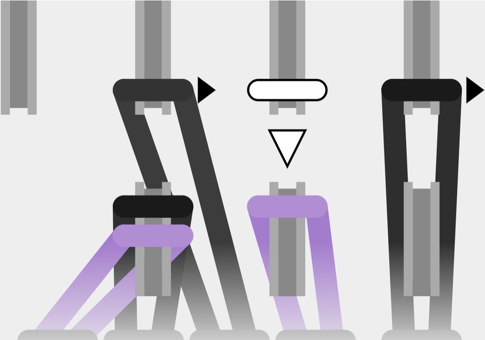
|
Efficient Transfer Planning for Flat Knitting
Jenny Lin, Vidya Narayanan and James McCann
ACM Symposium on Computational Fabrication, 2018
paper |
project page
Industrial knitting machines form fabric by manipulating loops of yarn held on hundreds of hook-shaped needles. Transfer planning algorithms generate a sequence of machine instructions that move loops between their current needles and given target needles. In this paper we describe how to compute the run-time cost of a transfer plan and compare the plans generated by several existing and new transfer planning algorithms.
|
| 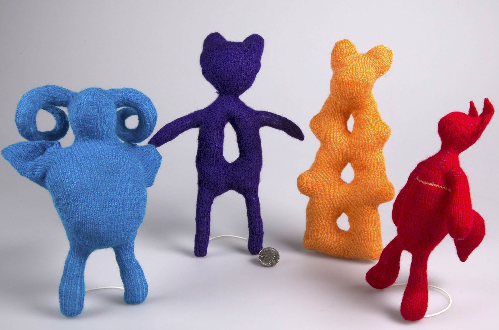
|
Automatic Machine Knitting of 3D Meshes
Vidya Narayanan , Lea Albaugh, Jessica Hodgins, Stelian Coros and James McCann
ACM Transactions on Graphics, 2018
paper |
project page
We present the first computational approach that can transform 3D meshes, created by traditional modeling programs, directly into instructions for a computer-controlled knitting machine.
|
| 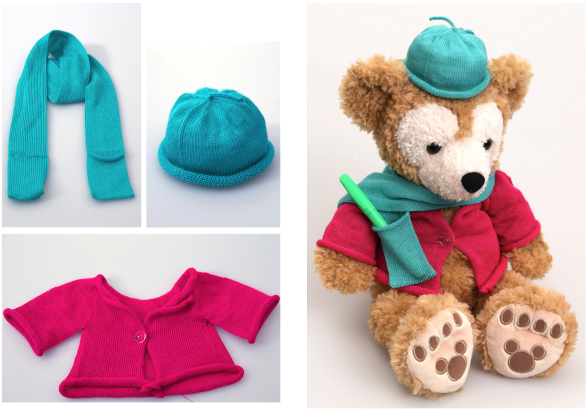
|
A compiler for 3D Machine Knitting
James McCann, Lea Albaugh, Vidya Narayanan , April Grow,Wojciech Matusik, Jen Mankoff, Jessica Hodgins
ACM Transactions on Graphics (SIGGRAPH), 2016
paper |
project page
Industrial knitting machines can produce finely detailed 3D surfaces but.
programming them requires in depth knowledge of
low-level knitting operations.
In this work, we built a compiler to convert high level design primitives into
knitting machine instructions.
|
| 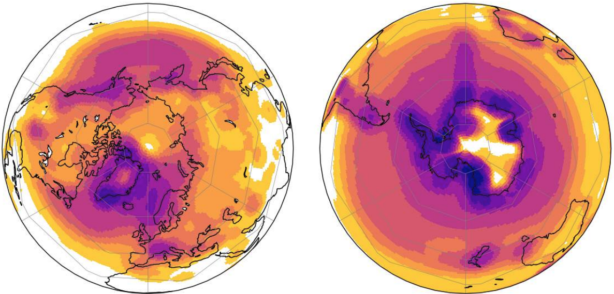
|
An exploratory framework for cyclone identification and tracking
Akash Anil Valsangkar, Joy Merwin Monteiro, Vidya Narayanan , Ingrid Hotz, Vijay Natarajan
IEEE Transactions on Visualization and Computer Graphics, 2018
paper |
project page
Analyzing depressions plays an important role in meteorology, especially in the study of cyclones. In particular, the study of the temporal evolution of cyclones requires a robust depression tracking framework. We propose a pipeline for the exploration of cyclones and their temporal evolution that combines the robustness of topological approaches and the detailed tracking information from optical flow analysis.
|
| 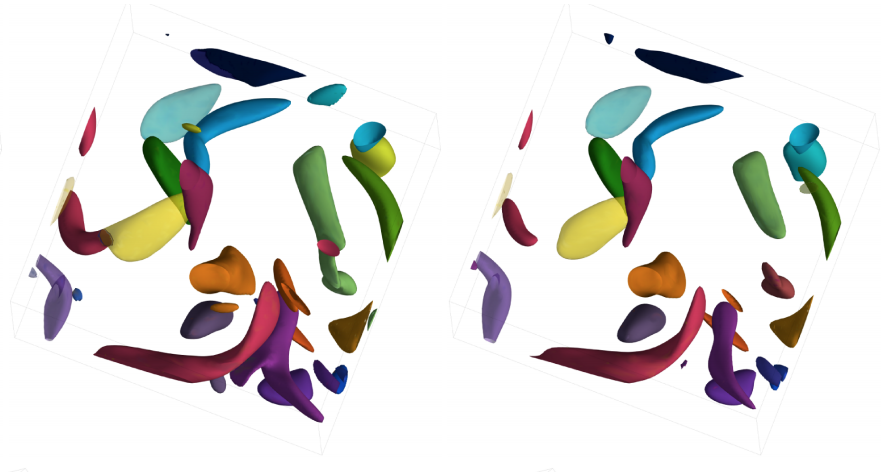
|
Distance between extremum graphs
Vidya Narayanan , Dilip Thomas, Vijay Natarajan
IEEE Pacific Visualization Symposium(PacificVis), 2015
paper |
project page
Scientific phenomena are often studied through collections of related scalar fields.
Exploration of such data requires a robust distance measure to compare scalar fields
for tasks such as identifying key events and establishing correspondence between
features in the data. We propose a topological data structure called
the complete extremum graph and define a distance measure on it for comparing scalar fields
in a feature-aware manner.
|
| 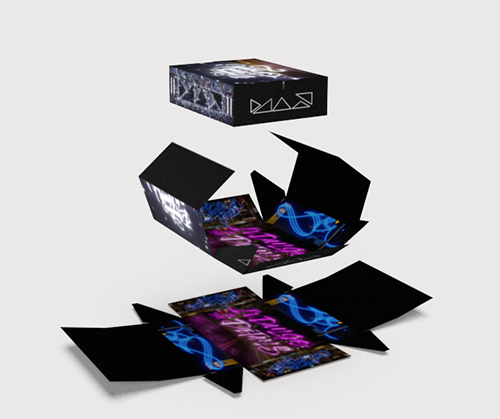
|
Fantastic Fold (Adobe MAX Sneak, 2018)
(with Amanda Ghassaei, Danny Kaufman, Wilmot Li, Eric Stollman, Celso Gomes and Mike Lukac)
During my internship at Adobe Research in 2018, I worked on Fantastic Fold -- a tool that analyzes a dieline and automatically determines the folded 3D shape, as well as an
interactive mapping between the 2D and 3D representations for inuitive texturing (see the Adobe MAX Sneak video).
|
| 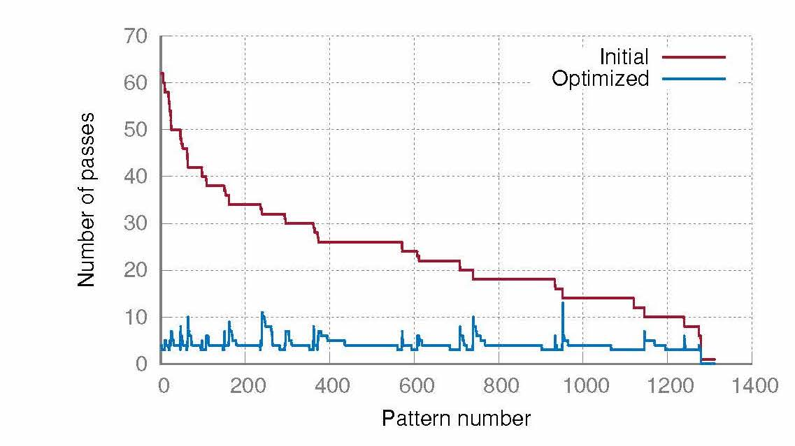
|
Instruction reordering for optimizing machine knitting (with Laxman Dhulipala, Spring 2018)
For a compilers class, we optimized knitting machine programs written in knitout -- a machine knitting language -- to improve efficiency for flat transfer planning by reordering instructions (poster). Some of these ideas were used in the visual knitting machine programming system.
|
| 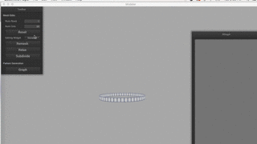
|
Modeling knittable geometry (Fall 2017)
For a computational geometry class, I built an interactive modeler for machine knittable geometry which could be refined using a modified subdivision scheme (report). Some of these ideas went into building the visual knitting machine programming system.
|
| 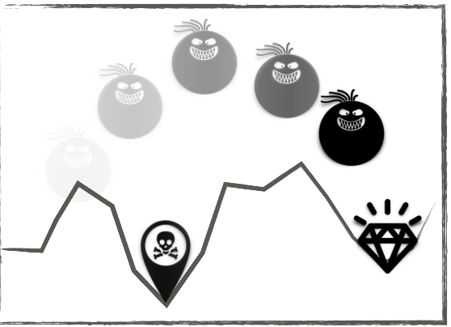
|
2D Games as Cyber Physical Systems (Spring 2017)
For a cyber-physical systems class, I explored treating simple single player 2D game as a cyber physical system where playability and non-triviality can be gauranteed by a level design system (slides).
|
| 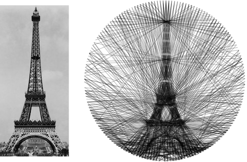
|
Computational String Art (Fall 2016)
String or pin-thread art is a popular craft that involves winding a string around a set of nails to generate an artifact.
An important task in automatic fabrication of such art work is planning the string layout
to achieve the target representation. We explored this planning problem for
generating string-art from images automatically.
Motivated by artists (see Petros Vrellis , Kumi Yamashita ),
we built an automatic framework to design such artifacts.
Turns out that various people have been looking at
similar ideas. Here is a poster I made for a class project on this topic.
|
| 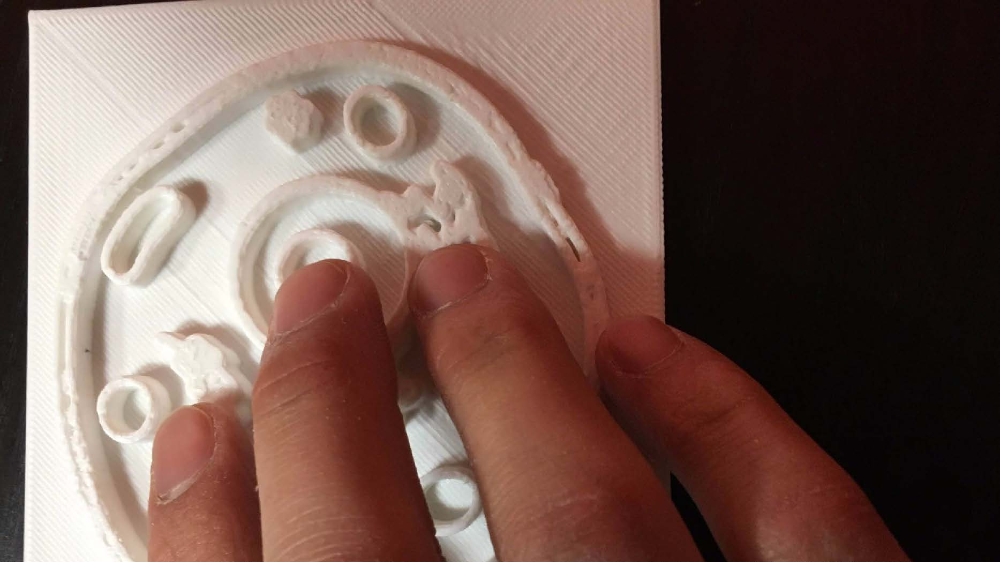
|
Tactile learning (with Hannah Rosen and Gary Li, Fall 2016)
We compared various approaches to generate tactile versions of images to effectively communicate illustrations with individuals with visual impairment.
Here are the slides from our presentation for the applied fabrication techniques class.
|
Website template stolen from here
|
|
{kind=link}